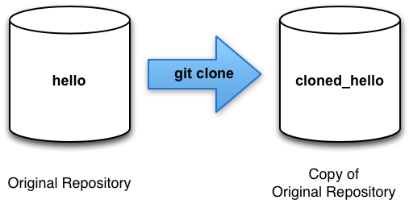
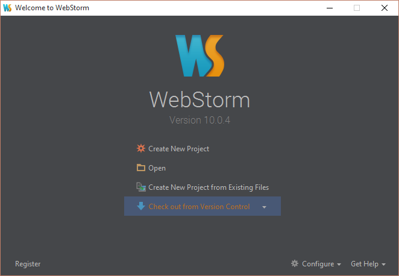
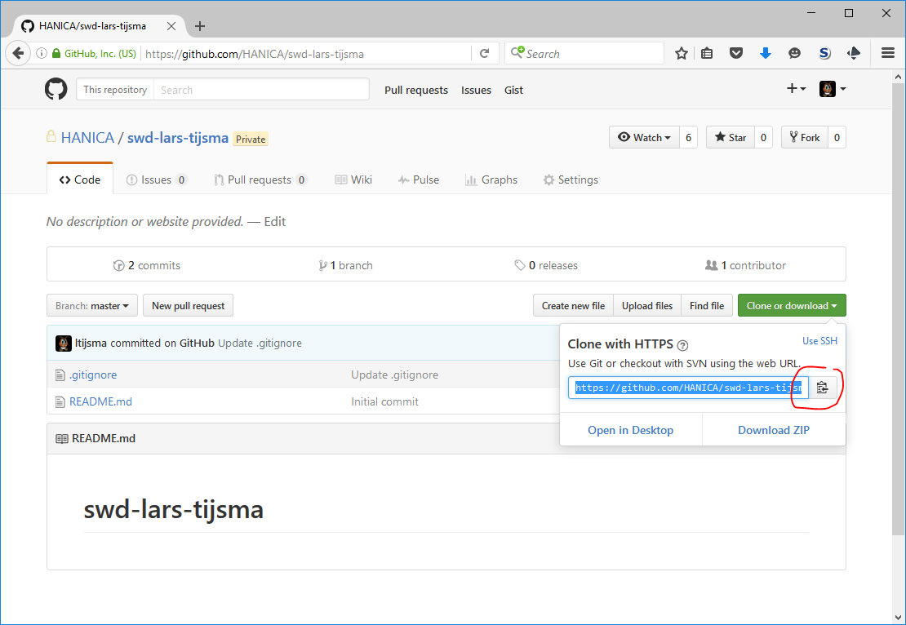
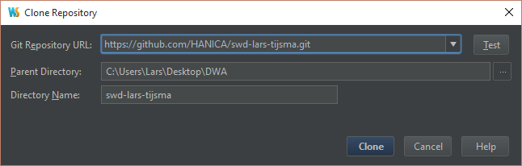
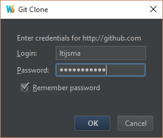
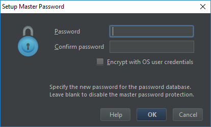
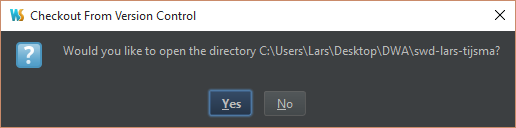
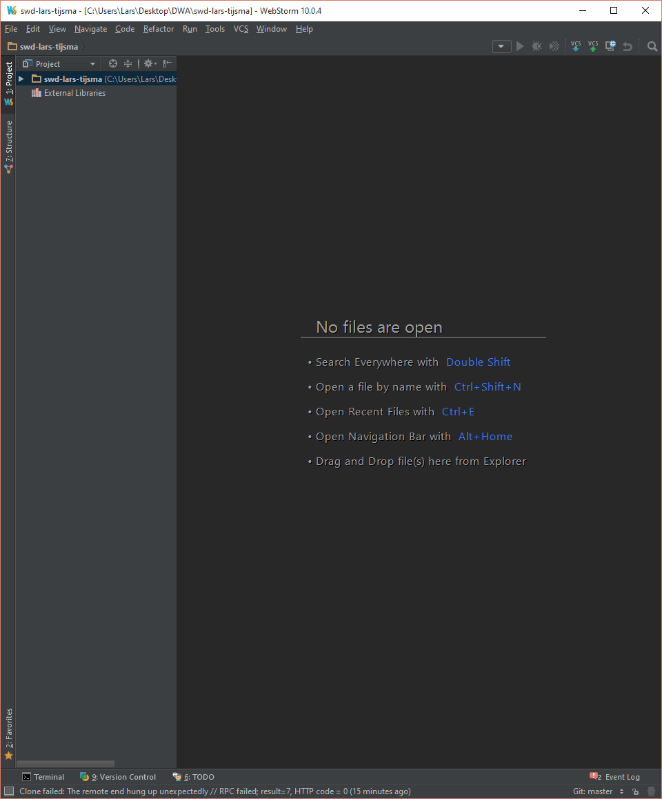

lab 1 Cloning Repositories
Goals
- Learn how to clone your remote repository.
Up to this point we have been working with a single git repository. However, git excels at working with multiple repositories. These extra repositories may be stored locally, or may be accessed across a network connection.
In the next section we will create a new repository called “ cloned_hello”. We will show how to move changes from one repository to another, and how to handle conflicts when they arise from between two repositories.
For now, we will be working with local repositories (i.e. repositories stored on your local hard disk), however most of the things learned in this section will apply to multiple repositories whether they are stored locally or remotely over a network.
NOTE: We are going be making changes to both copies of our repositories. Make sure you pay attention to which repository you are in at each step of the following labs.
Create a DWA directory 01
Create a DWA directory to host all your SWD and CWD work.
Clone your personal remote CWD repo 02
Execute:
Open GitKraken and click "Check out from Version Control". From the drop down menu select "Git".
Go to your personal remote github repo in a webbrowser and copy the HTTPS clone URL.
Paste the URL in "Git Repository URL:". Select the DWA directory as your "Parent Directory". Now press Clone.
Enter your GitHub credentials and press OK.
Leave your WebStorm master password blank and press OK.
Open the directory you've just created.
Output:
You should see the following workspace. Notice the Version Control button at the bottom of the window.
